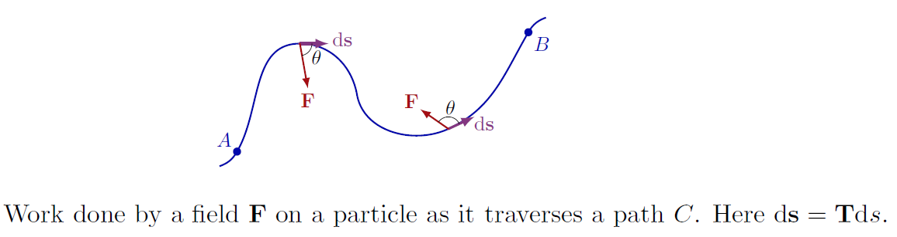

Jonathan Crofts
Nottingham Trent University
Suppose we have a parametrisation of a smooth space curve, i.e.
\[ \mathbf{r}(t) = \begin{pmatrix}f(t)&g(t)&h(t)\end{pmatrix}, \quad t\in[a, b] \]Then we can measure the distance along the curve using the formula
The length of a smooth curve $\mathbf{r}(t)=(f(t), g(t), h(t))$, $t\in[a, b]$ that is traced exactly once as $t$ inceases from $a$ to $b$ is
\[ L = \int_a^b\sqrt{\left(\frac{\mathrm{d}f}{\mathrm{d}t}\right)^2+\left(\frac{\mathrm{d}g}{\mathrm{d}t}\right)^2 +\left(\frac{\mathrm{d}h}{\mathrm{d}t}\right)^2}\,\mathrm{d}t \]Setting $\mathbf{v}=\mathrm{d}\mathbf{r}/\mathrm{d}t$ we can write the above as $\displaystyle L=\int_a^b|\mathbf{v}|\,\mathrm{d}t$
Find the length of one turn of the helix
\[ \mathbf{r}(t) = \begin{pmatrix}\cos(t)&\sin(t)&t\end{pmatrix} \]The helix makes one full turn as $t$ runs from 0 to $2\pi$. The length of this portion of curve is \[ \begin{align*} L &=\int_a^b|\mathbf{v}|\,\mathrm{d}t = \int_0^{2\pi}\sqrt{(-\sin(t))^2+(\cos(t))^2+(1)^2}\,\mathrm{d}t\\ &=\color{red}{\boxed{\color{white}{\int_0^{2\pi}\sqrt{2} = 2\pi\sqrt{2}}}} \end{align*} \]
The unit tangent vector of a differentiable curve $\mathbf{r}(t)=(f(t), g(t), h(t))$, $t\in[a, b]$
\[ \mathbf{T} = \frac{\mathbf{v}}{|\mathbf{v}|} \]where $\mathbf{v}=\mathrm{d}\mathbf{r}/\mathrm{d}t$
Find the tangent unit vector of the helix $\mathbf{r}(t) = (\cos(t), \sin(t), t)$
We can generalise the concepts in the previous slides in order to integrate a scalar field $f$ over a curve $\mathbf{r}(t)$
Such integrals are called line integrals and they have important applications in physics and applied mathematics
The line integral of a scalar field $f:\mathbb{R}^3\to\mathbb{R}$ along a curve parametrised by $\mathbf{r}=\mathbf{r}(t)$, $t\in[a, b]$ is
\[ \int_C f(x,y,z)\,\mathrm{d}s = \int_a^b f(\mathbf{r}(t))|\mathbf{r}'(t)|\,\mathrm{d}t \]Such an integral is also known as a path integral
We call $\mathrm{d}s = |\mathbf{r}'(t)|\mathrm{d}t$ the arc length element
Evaluate
\[ \int_C (xy+y+z)\,\mathrm{d}s \]along the curve $\mathbf{r}(t) = (2t, t, 2-2t), ~t\in[0, 1]$
Find the mass of a wire that lies along the curve \[ \mathbf{r}(t) = \begin{pmatrix}t^2-1&0&2t\end{pmatrix}\quad t\in[0, 1] \] with density $\rho(t) = (3/2)t$
The mass, $M$, of the wire is given by
\[ M = \int_C \rho(t)\,\mathrm{d}s = \int_0^1\rho(t)|\mathbf{r}'(t)|\,\mathrm{d}t \]Or
\[ M = \int_0^1 \frac{3}{2}t\cdot 2\sqrt{t^2+1}\,\mathrm{d}t \]We can solve this integral by setting $u=t^2+1$ so that
\[ \color{red}{\boxed{\color{white}{ M = \frac{3}{2}\int_1^2u^{\frac{1}{2}}\,\mathrm{d}t = \frac{3}{2}\left[\frac{3}{2}u^{\frac{3}{2}}\right]_1^2 = 2\sqrt{2}-1 }}} \]Suppose that $\mathbf{F} = \begin{pmatrix}M(x,y,z)&N(x,y,z)&P(x,y,z))\end{pmatrix}$ is a vector field and
\[ \mathbf{r}(t) = \begin{pmatrix}f(t)&g(t)&h(t)\end{pmatrix},\quad t\in[a, b] \]is a parametrisation of a smooth space curve
If $\mathbf{F}$ represents a force then the integral of the scalar field $\mathbf{F}\cdot\mathbf{T}$, i.e.the scalar component of $\mathbf{F}$ in the direction of the unit vector $\mathbf{T}$, over the curve is called the work done by $\mathbf{F}$
The work done by a force $\mathbf{F}$ over a smooth curve $C$ paramatrised by $\mathbf{r}(t),~t\in[a, b]$ is
\[ W = \int_C\mathbf{F}\cdot\mathbf{T}\,\mathrm{d}s = \int_a^b\mathbf{F}(\mathbf{r}(t))\cdot\frac{\mathrm{d}\mathbf{r}}{\mathrm{d}t}\,\mathrm{d}t \]Find the work done by $\displaystyle\mathbf{F} = (y-x^2, z-y^2, x-z^2)$ over the curve
\[ \mathbf{r}(t) = (t, t^2, t^3), \quad t\in[0, 1] \]Evaluate $\mathbf{F}$ on the curve:
\[ \begin{align*} \mathbf{F} = (y-x^2, z-y^2, x-z^2) &= (t^2-t^2, t^3-t^4, t-t^6)\\ &= (0, t^3-t^4, t-t^6) \end{align*} \]Thus $\mathbf{F}= (0, t^3-t^4, t-t^6)$ and
\[ \frac{\mathrm{d}\mathbf{r}}{\mathrm{d}t} = \frac{\mathrm{d}}{\mathrm{d}t}\left(t, t^2, t^3\right) = (1, 2t, 3t^2) \]So
\[ \mathbf{F}\cdot\frac{\mathrm{d}\mathbf{r}}{\mathrm{d}t} = (0, t^3-t^4, t-t^6)\cdot(1, 2t, 3t^2) = 2t^4-2t^5+3t^3-3t^8 \]Finally, we integrate:
\[ \begin{align*} W = \int_C\mathbf{F}\cdot\mathbf{T}\,\mathrm{d}s&=\int_C\mathbf{F}\cdot\frac{\mathrm{d}\mathbf{r}}{\mathrm{d}t}\,\mathrm{d}t\\ &= \int_0^12t^4-2t^5+3t^3-3t^8\,\mathrm{d}t\\ &= \left[\frac{2}{5}t^5-\frac{2}{6}t^6-\frac{3}{4}t^4-\frac{3}{9}t^9\right]_0^1 = \color{red}{\boxed{\color{white}{\frac{29}{60}}}} \end{align*} \]The notation for the line integral used to compute work is varied in the literature, and the following expressions are generally considered equivalent in the context of a force field $\mathbf{F}$ acting along a curve $C$:
\[ \color{red}{\boxed{\color{white}{ \begin{align*} \int_C\mathbf{F}\cdot\mathbf{T}\,\mathrm{d}s&=\int_a^b\mathbf{F}\cdot\frac{\mathbf{r}'(t)}{||\mathbf{r}'(t)||}||\mathbf{r}'(t)||\,\mathrm{d}t\\ &=\int_a^b\mathbf{F}\cdot\frac{\mathrm{d}\mathbf{r}}{\mathrm{d}t}\,\mathrm{d}t\\ &=\int_C\mathbf{F}\cdot\mathrm{d}\mathbf{r}\quad (\textbf{compact differential form})\\ &=\int_CM\,\mathrm{d}x+N\,\mathrm{d}y+P\,\mathrm{d}z \quad (\textbf{$\mathrm{d}t$'s cancelled}) \end{align*} }}} \]